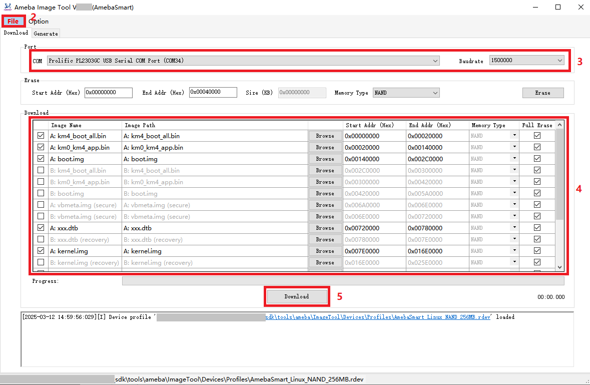
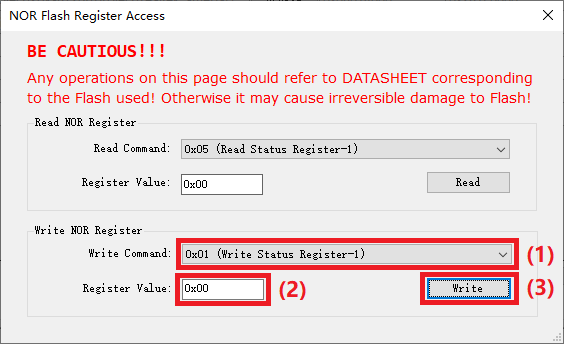
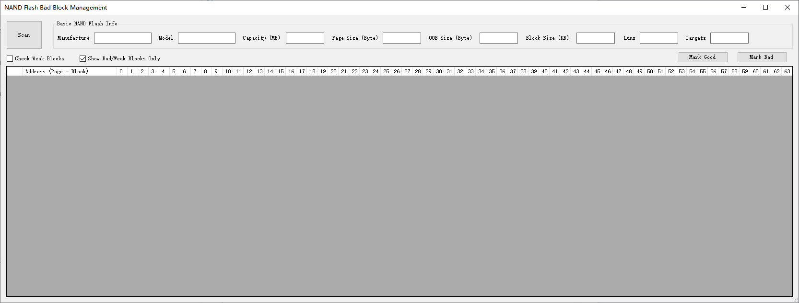
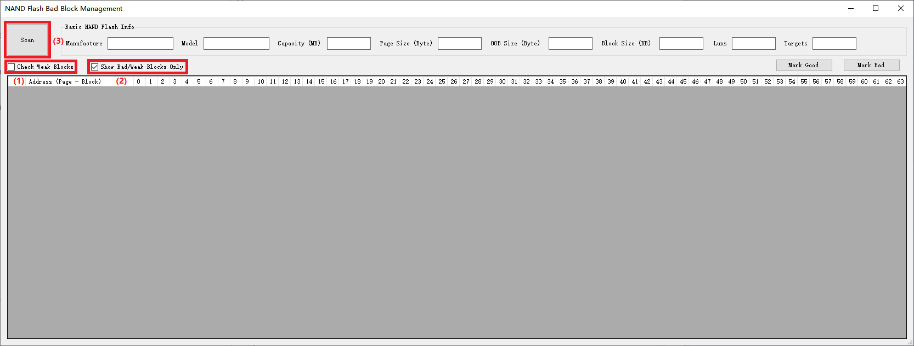
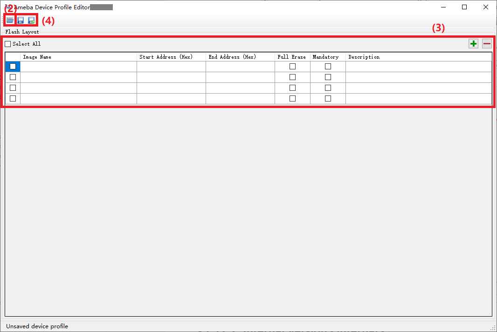

Image Tool
概述
Image Tool 是 Realtek官 方为 Ameba 系列 SoC 开发的固件下载工具。
Image Tool可以通过以下接口下载固件到设备的Flash中:
Flash 类型 |
UART |
USB |
|---|---|---|
NOR Flash |
√ |
√ |
Flash 类型 |
UART |
USB |
|---|---|---|
NOR Flash |
√ |
X |
Flash 类型 |
UART |
USB |
|---|---|---|
NOR Flash |
√ |
X |
Flash 类型 |
UART |
USB |
|---|---|---|
NOR Flash |
√ |
√ |
NAND Flash |
√ |
√ |
Image Tool 的界面如下所示：
环境设置
硬件设置
固件下载的硬件设置如下所示：
软件设置
环境要求：如 WinXP、Win7 或更高版本、Microsoft .NET Framework 4.0。
软件位置:
Image Tool:
{SDK}/tools/ameba/ImageTool/AmebaImageTool.exeDevice Profile Editor:
{SDK}/tools/ameba/DeviceProfileEditor/AmebaDeviceProfileEditor.exe
Device profiles:
{SDK}/tools/ameba/ImageTool/Devices/Profiles
Device profiles 提供下载固件所需的设备信息，命名规则为：
<SoC name>_<OS type>_<Flash type>[_<Extra info>].rdev
其中: :SoC name: Realtek Ameba SoC的名字 :OS type: FreeRTOS 或 Linux :Flash type: NOR 或 NAND :Extra info: 例如Flash大小、应用等的附加信息
备注
{ImageTool}将在后面的章节中指代{SDK}/tools/ameba/ImageTool。如需通过UART接口下载固件，需要先安装板载USB转UART适配器（例如PL2303GC）的主控制器驱动，具体驱动请在相应USB转UART适配器厂商的官方网站查询。
对于WinXP或Win7, 若需通过USB接口下载固件，需要先安装USB驱动
ImageTool/RtkUsbCdcAcmSetup.INF。
固件下载
固件文件
对于一个空芯片，必须下载以下强制性固件文件：
固件名称 |
描述 |
是否必需? |
|---|---|---|
km4_boot_all.bin |
KM4 引导程序 |
是 |
km0_km4_app.bin |
KM0/KM4 应用程序 |
是 |
km0_km4_app_mp.bin |
KM0/KM4 MP应用程序 |
否 |
固件名称 |
描述 |
是否必需? |
|---|---|---|
km4_boot_all.bin |
KM4 引导程序 |
是 |
kr4_km4_app.bin |
KR4/KM4 应用程序 |
是 |
dsp_all.bin |
DSP 固件 |
否 |
kr4_km4_app_mp.bin |
KR4/KM4 MP应用程序 |
否 |
固件名称 |
描述 |
是否必需? |
|---|---|---|
km4_boot_all.bin |
KM4 引导程序 |
是 |
kr4_km4_app.bin |
KR4/KM4 应用程序 |
是 |
dsp_all.bin |
DSP 固件 |
否 |
kr4_km4_app_mp.bin |
KR4/KM4 MP应用程序 |
否 |
固件名称 |
描述 |
是否必需? |
|---|---|---|
km4_boot_all.bin |
KM4 引导程序 |
是 |
km0_km4_ca32_app.bin |
KM0/KM4/CA32 应用程序 |
是 |
固件名称 |
描述 |
是否必需? |
|---|---|---|
A: km4_boot_all.bin |
A 槽：KM4 引导程序 |
是 |
A: km0_km4_app.bin |
A 槽：KM0/KM4 应用程序 |
是 |
A: boot.img |
A 槽：CA32 固件包，包括 BL1、BL2、BL32 和 BL33 |
是 |
B: km4_boot_all.bin |
B 槽：KM4 引导程序 |
否 |
B: km0_km4_app.bin |
B 槽：KM0/KM4 应用程序 |
否 |
B: boot.img |
B 槽：CA32 固件包，包括 BL1、BL2、BL32 和 BL33 |
否 |
A: vbmeta.img |
A 槽：仅用于安全启动的 AP Linux 元数据固件 |
否 |
B: vbmeta.img |
B 槽：仅用于安全启动的 AP Linux 元数据固件 |
否 |
A: xxx.dtb* |
A 槽：AP Linux DTB (设备树块) |
是 |
B: xxx.dtb* |
B槽：用于恢复的AP Linux DTB |
否 |
A: kernel.img |
A 槽：AP Linux 内核 |
是 |
B: kernel.img |
B 槽：AP Linux 内核 |
否 |
rootfs.img |
AP Linux 根文件系统二进制文件 |
是 |
userdata.img |
AP 用户数据二进制文件 |
是 |
不同Ameba SoC对应的固件文件的生成路径可参考 固件文件.
下载步骤
固件下载步骤如下所示：
进入下载模式。
有如下三种方式进入下载模式：
按下 DOWNLOAD 按钮并保持按下状态。
重新接通设备电源或按下 CHIP_EN 按钮。
松开 DOWNLOAD 按钮。
引脚名称
符号
有效电平
描述
PB5
UD_DIS
低电平
UART 下载禁用，默认内部上拉
1: 进入正常启动模式
0: 进入 UART 下载模式
引脚名称
符号
有效电平
描述
PA20
UD_DIS
低电平
UART 下载禁用，默认内部上拉
1: 进入正常启动模式
0: 进入 UART 下载模式
引脚名称
符号
有效电平
描述
PA20
UD_DIS
低电平
UART 下载禁用，默认内部上拉
1: 进入正常启动模式
0: 进入 UART 下载模式
引脚名称
符号
有效电平
描述
PB24
UD_DIS
低电平
UART 下载禁用，默认内部上拉
1: 进入正常启动模式
0: 进入 UART 下载模式
如果AP正常运行，在UART控制台中输入
reboot uartburn命令。关于Trap Pin更详细的说明，请参考章节 Trap Pins。
现在，设备进入下载模式，准备接收数据。
选择设备配置文件。
打开Image Tool, 点击 并选择适当的设备配置文件
AmebaDplus_FreeRTOS_NOR.rdev。打开Image Tool, 点击 并选择适当的设备配置文件
AmebaLite_FreeRTOS_NOR.rdev。打开Image Tool, 点击 并选择适当的设备配置文件
AmebaLite_FreeRTOS_NOR.rdev。打开Image Tool, 点击 并选择适当的设备配置文件。
对于安装NOR Flash的IC系列，选择
AmebaSmart_FreeRTOS_NOR.rdev。对于安装NAND Flash的IC系列，选择
AmebaSmart_FreeRTOS_NAND.rdev。
选择对应的串口和传输波特率。 默认波特率为1500000。
备注
对于 RTL8721Dx 或 RTL8730E， USB下载接口会忽略波特率。
点击 按钮选择要下载的固件。
备注
可以根据需要更改Flash layout。 建议使用
Device Profile Editor而不是Image Tool更改Flash layout，并且SDK中的Flash layout也应相应更改。 详情请参阅章节 修改设备配置文件 。点击 按钮开始下载。
进度条将显示每个固件的下载进度，日志窗口将显示操作状态。

{kind=link}
{kind=link}
{kind=link}
{kind=link}
{kind=link}
固件下载步骤如下所示：
进入下载模式。
按下 DOWNLOAD 按钮并保持按下状态。
重新接通设备电源或按下 CHIP_EN 按钮。
松开 DOWNLOAD 按钮。
现在，设备进入下载模式，准备接收数据。
选择设备配置文件。
点击 并选择适当的设备配置文件：
对于 RTL8730ELM-VA7, 选择
AmebaSmart_Linux_NAND_128MB.rdev对于 RTL8730ELM-VA8, 选择
AmebaSmart_Linux_NAND_256MB.rdev
选择对应的串口，USB 下载接口的波特率将被忽略。
点击 按钮选择要下载的固件。
备注
可以根据需要更改Flash layout。 建议使用
Device Profile Editor而不是Image Tool更改Flash layout，并且SDK中的Flash layout也应相应更改。 详情请参阅章节 修改设备配置文件 。点击 按钮开始下载。
进度条将显示每个固件的下载进度，日志窗口将显示操作状态。
 Linux 固件下载操作
{kind=link}
Flash 擦除
擦除 Flash 的步骤如下所示：
按上述方式进入下载模式。
按上述方式选择相应的设备配置文件。
选择对应的串口和波特率。
备注
对于 USB 下载接口，将忽略波特率。
选择对应的 。
输入擦除起始地址。
对于 NOR Flash，值应为 4KB 对齐。
对于 NAND Flash，值应与块大小对齐。
备注
请参考相应 NAND Flash 的数据手册获取块大小，通常为 128KB。
输入擦除大小或擦除结束位置。
对于 NOR Flash，擦除大小值应为 4KB 的倍数。
对于 NAND Flash，擦除大小值应为块大小的倍数。
备注
请参考相应 NAND Flash 的数据手册获取块大小，通常为 128KB。
点击 按钮，擦除操作开始。
可以从日志窗口获取操作结果。
备注
在固件下载之前，不需要手动擦除 Flash，因为在固件下载过程中将自动擦除 Flash。
如果在 步骤6 , 检测到 Flash 块保护，请参考第 Flash 块保护处理流程 节获取详细信息。
{kind=link}
{kind=link}
Flash 寄存器访问
此功能仅供内部使用，用于读取/写入 Flash 状态/功能寄存器。此功能自版本v2.2.0起开始支持。
小心
任何 Flash 寄存器操作，特别是写操作，必须参考 Flash 的数据手册，否则可能导致对 Flash 的不可逆损坏。
访问 Flash 寄存器的常见预步骤如下：
确保 Image Tool 已关闭。
编辑
<ImageTool>/Setting.json文件 ExpertMode 的值为非零整数（例如 1），进入 expert mode 。按上述方式进入下载模式。
按上述方式选择相应的设备配置文件。
选择对应的串口和波特率。
NOR 或 NAND 寄存器访问的具体操作如下：
除了常见预步骤外，点击 并选择 项，打开 NOR Flash Register 寄存器访问对话框：
在完成常见预步骤后，继续下面的步骤来读取 NOR Flash 寄存器：
选择 来读取特定寄存器。
点击 按钮，寄存器值将在寄存器值文本框中显示。

读 NOR Flash 寄存器操作
在完成常见预步骤后，继续下面的步骤来写 NOR Flash 寄存器：
选择 来写特定寄存器。
输入寄存器值。
点击 按钮，写入寄存器值。
可以回读寄存器值进行验证，请参考 读 NOR Flash 寄存器 部分。
 写 NOR Flash 寄存器操作
{kind=link}
{kind=link}
{kind=link}
{kind=link}
{kind=link}
NAND 坏块管理
此功能仅供内部使用，用于扫描或标记 NAND 块状态。此功能自版本v2.5.10起开始支持。
NAND 坏块管理的常见预步骤：
确保 Image Tool 已关闭。
编辑
<ImageTool>/Setting.json文件 ExpertMode 的值为非零整数（例如 1），进入 expert mode 。按上述方式进入下载模式。
按上述方式选择相应的设备配置文件。
选择对应的串口和波特率。
点击 并选择 项，打开 NAND Flash 坏块管理对话框：
 NAND Flash 坏块管理对话框
{kind=link}
扫描块状态
在完成常见预步骤后，继续下面的步骤来扫描块状态：
（可选）根据需要勾选 复选框。
如果默认未选中，Image Tool 只会扫描每个块的坏标记以获取不良块列表。
如果选中，Image Tool 将扫描所有块的状态以及正常块的所有页状态，以获得块和页的详细状态结果，这将比仅扫描坏块花费更多的时间。
（可选）根据需要勾选 复选框。
如果默认未选中，Image Tool 将显示所有块的状态。
如果选中，Image Tool 只会显示坏块和弱块的状态。（推荐）
点击 按钮。
 扫描 NAND Flash 块状态操作
扫描结果如下所示：
对于仅坏块扫描结果，坏块会在地址单元中显示为红色背景。
对于弱块扫描结果, 块的地址单元和页的单元将用特殊颜色标记：
{kind=link}
{kind=link}
{kind=link}
标记块状态
在执行块扫描操作后，用户可以将指定块的状态标记为良好或损坏。此功能仅用于内部调试目的。
小心
修改块状态时要小心，特别是将坏块标记为良好时。
将非坏块的状态标记为坏块：
将坏块的状态标记为良好：
{kind=link}
{kind=link}
Flash 块保护过程
在固件下载或flash擦除操作期间，如果在设备上检测到flash块保护配置，Image Tool 将弹出对话框引导用户进行后续操作。
{kind=link}
{kind=link}
系统为用户提供以下后续操作选项：
尝试在块受保护的情况下进行操作（可能失败）
移除保护，并在操作后恢复保护
中止操作
此外，用户可以选中 复选框，以记住进一步操作的选择，并可以取消选中 来清空记住的选择。
修改设备配置文件
修改现有设备配置文件的步骤如下：
启动设备配置文件编辑器。
点击 Open 按钮加载现有设备配置文件。
根据需要更改
Flash Layout配置。Image Name: 由 SDK 编译的固件名称。Start Address: 十六进制格式的起始地址。对于 NAND Flash，值应与块大小对齐。End Address: 十六进制格式的结束地址。对于 NAND Flash，值应与块大小对齐，分区大小应为块大小的倍数，且需分配适当比例的备用块（至少一个）用于坏块管理。Full Erase: 标识 ImageTool 在固件下载前是否擦除整个分区。选中: 完全擦除，通常用于文件系统分区；对于 NAND Flash，所有分区将默认选中且不允许取消选中。
取消选中: 不完全擦除，仅擦除固件文件的实际大小，仅适用于 NOR Flash 的非文件系统分区。
Mandatory: 标识 ImageTool 是否默认启用分区进行下载。选中: 强制分区，默认启用。
取消选中: 可选分区，默认禁用。
Description: 描述文本，用于描述固件，将在鼠标悬停固件时显示此信息。
点击 Save 按钮以覆盖现有设备配置文件，或点击 Save As 按钮将修改后的设备配置文件保存到新文件中。
 编辑现有设备配置文件
{kind=link}
固件合成
该功能支持将多个固件文件根据对应的偏移量合成为一个固件文件。此功能自版本v2.7.10起开始支持。
固件合成的步骤如下：
{kind=link}
{kind=link}
固件验证
对于已下载固件的芯片，可以通过该功能验证芯片中的固件和固件文件是否一致。此功能自版本v2.8.3起开始支持。
固件验证的步骤如下：
确保 Image Tool 已关闭。
编辑
<ImageTool>/Setting.json文件 ExpertMode 的值为0xbda（或3034），进入 expert mode 后，打开Image Tool。按上述方式选择相应的设备配置文件。
选择对应的串口和波特率。
点击 选择固件文件。
点击 按钮，开始验证。
如果显示 verified OK ，则表示芯片中的固件与选择的固件文件内容一致，反之，不一致。
该功能会将芯片中的固件内容保存到Image Tool所在文件夹。
{kind=link}